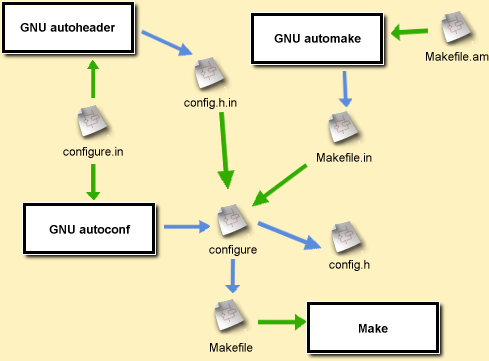

2. How it all fits together
- Automake takes as input the file
Makefile.amand producesMakefile.in. - The "autoconf" program takes as input the file
configure.in(or in Autoconf 2.5 the fileconfigure.ac) and generates the./configurescript out of it. - Autoheader takes as input the files
acconfig.hand generates theconfig.h.intemplate by parsingconfigure.in. ./configure, when ran by the user generates the normalMakefileout ofMakefile.inand optionally processes other files (such asconfig.h.in->config.h, an optional RPM Spec, Makefiles in other directories, etc.
